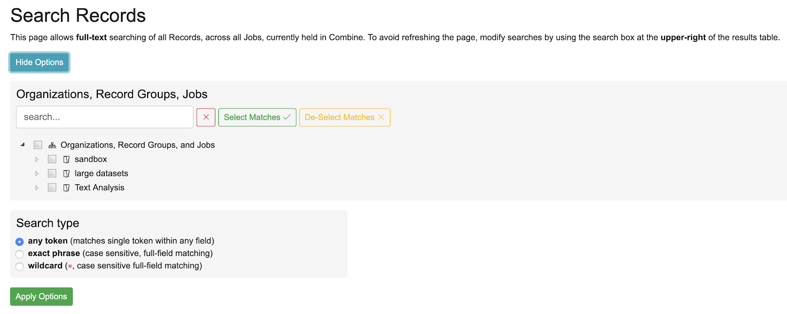
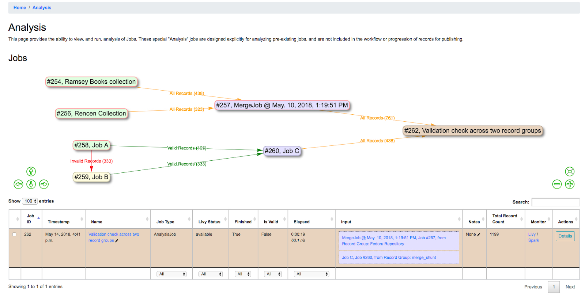
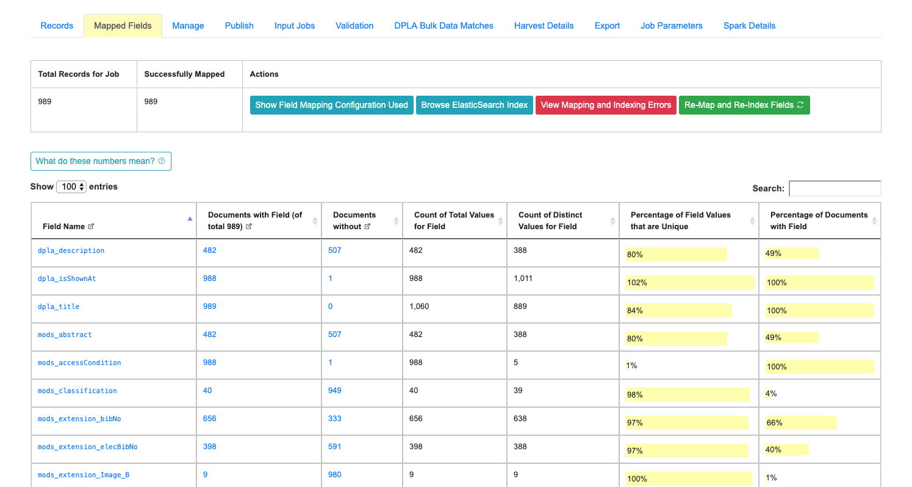
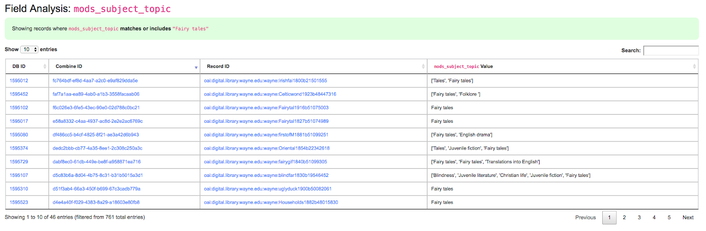
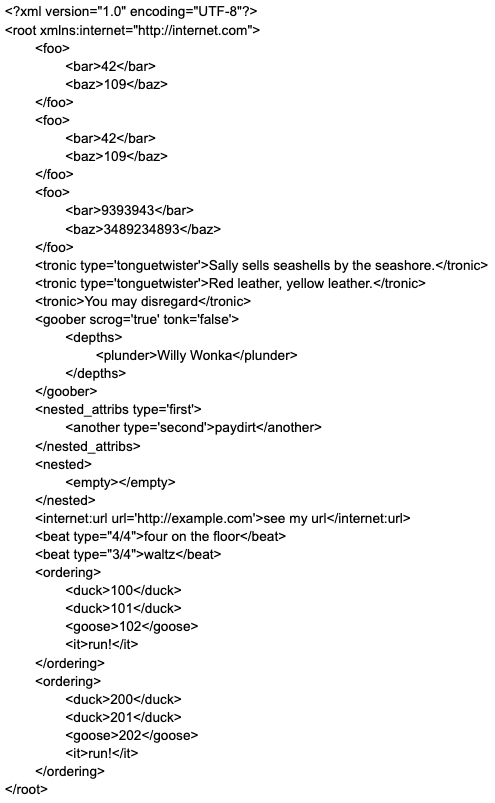
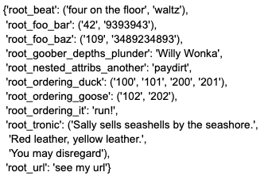
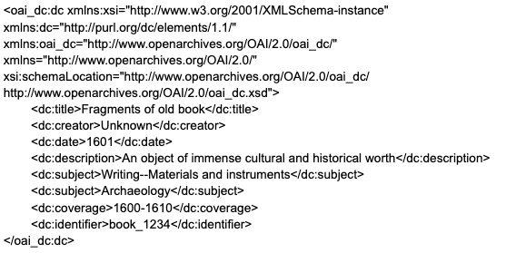
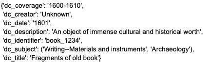
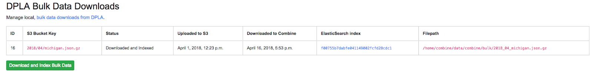
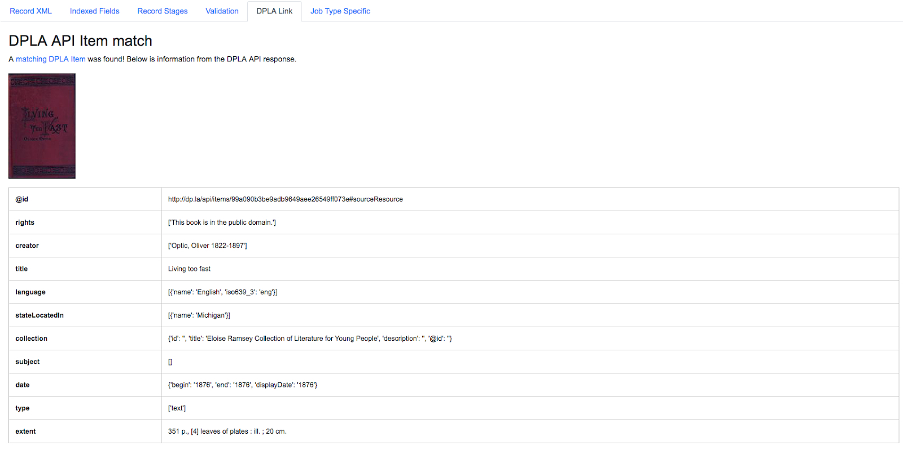

Combine’s initial development included several experimental ideas. Many of these were expanded into its current feature set, but others ultimately weren’t central enough to Combine’s core features to merit full development. Or in some cases, they relied on older code that could not be maintained within the funding and development hours available to the project over time.
The features below no longer appear in the interface, but the code has been left intact in case a future development effort decides to revisit them. Future groups looking for ways to improve Combine and build new functionality would do well to start here.
Combine provides a global search box on its main navigation bar, at the top right of the screen:
|
| Global search box in main Combine navigation bar |
By default, global search looks for any token in the search string. In this case, it’s likely that and matched most of those records. The following will outline search options to narrow results.
Clicking the blue “Show Options” button will open a panel offering additional search options:
|  |
| The opened Search Options panel |
A search can be narrowed still further by selecting a search type:
Global Search is searching the mapped fields for Records, which are stored in ElasticSearch. As such, the power (and complexity) of ElasticSearch is exposed here to some degree.
Note that when options are applied to the search with the “Apply Options” button, the URL is updated to reflect these new search options. If that URL is returned to, those search options are automatically parsed and applied, as indicated by the following message:
 |
| Options applied to search from URL |
Analysis Jobs are a bit of an island. On the back-end, they are essentially Duplicate / Merge Jobs, and have the same input and configuration requirements. They can pull input Jobs from across Organizations and Records Groups.
Analysis Jobs differ in that they do not exist within a Record Group. They are imagined to be ephemeral, disposable Jobs used entirely for analysis purposes.
You can see previously run, or start a new Analysis Job, from the “Analysis” link from the top-most navigation.
Below, is an example of an Analysis Job comparing two Jobs, from different Record Groups. This ability to pull Jobs from different Record Groups is shared with Merge Jobs. You can see only one Job in the table, but the entire lineage of what Jobs contribute to this Analysis Job. When the Analysis Job is deleted, none of the other Jobs will be touched (and currently, they are not aware of the Analysis Job in their own lineage).
|  |
| Analysis Job showing analysis of two Jobs, across two different Record Groups |
Undoubtedly one of Combine’s more interesting, confusing, and potentially powerful areas is the indexing of Record XML into ElasticSearch. This section will outline how that happens, and some possible insights that can be gleamed from the results.
All Records in Combine store their raw metadata as XML in a Mongo database. With that raw metadata, are some other fields about validity, internal identifiers, etc., as they relate to the Record. But, because the metadata is still an opaque XML “blob” at this point, it does not allow for inspection or analysis. To this end, when all Jobs are run, all Records are also indexed in ElasticSearch.
As many who have worked with complex metadata can attest to, flattening or mapping hierarchical metadata to a flat document store like ElasticSearch or Solr is difficult. Combine approaches this problem by generically flattening all elements in a Record’s XML document into XPath paths, which are converted into field names that are stored in ElasticSearch. This includes attributes as well, further dynamically defining the ElasticSearch field name.
For example, the following XML metadata element:
< mods:accessCondition type="useAndReproduction" >This book is in the public domain.< /mods:accessCondition >
would become the following ElasticSearch field name:
mods_accessCondition_@type_useAndReproduction
While mods_accessCondition_@type_useAndReproduction is not terribly pleasant to look at, it’s telling where this value came from inside the XML document. And most importantly, this generic XPath flattening approach can be applied across all XML documents that Combine might encounter.
This “flattening”, aka “mapping”, of XML to fields that can be stored and readily queried in ElasticSearch is done through Field Mapping Configurations.
Breakdown of indexed fields for a Job
When viewing the details of a Job, the tab “Mapped Fields” shows a breakdown of all fields, for all records in this job, in a table. They can be thought of roughly as facets for the Job.
|  |
| Example of Field Analysis tab from Job details, showing all indexed fields for a Job |
 |
| Collapsible explanation of indexed fields breakdown table |
 |
| Drill down to mods_subject_topic indexed field |
In the table, you can see actual values for the field, with counts across documents in this Job. In the last column, you can click to see Records that have or do not have this particular value for this particular field.
Clicking into a subject like “fairy tales”, we get the following screen:
|  |
| Details for “fairy tales” mods_subject_topic indexed field |
Field Mapping is the process of mapping values from a Record’s source (probably a document in XML) to meaningful and analyzable key/value pairs that can be stored in ElasticSearch. Combine uses these mapped values in several ways:
To perform this mapping, Combine uses an internal library called XML2kvp, which stands for “XML to Key/Value Pairs”, to map XML to key/value JSON documents. Under the hood, XML2kvp uses xmltodict to parse the Record XML into a hierarchical dictionary, and then loops through that, creating fields based on the configurations below.
Each mapping is unique to support specific access, preservation, or analysis purposes. A finely tuned mapping for one metadata format or institution is likely to be unusable for another, even one in the same metadata format. Combine strives to be metadata format agnostic for harvesting, transformation, and analysis, and furthermore, performing these actions before a mapping has even been created or considered. To this end, a “generic” but customizable mapper was needed to take XML records and convert them into fields that can be used for developing an understanding about a group of Records.
While applications like Solr and ElasticSearch more recently support hierarchical documents, and would likely support a straight XML to JSON converted document (with xmltodict, or Object Management Group (OMG)’s XML to JSON conversion standard), the attributes in XML give it a dimensionality beyond simple hierarchy, and can be critical to understanding the nature and values of a particular XML element. These direct mappings would function, but would not provide the same scannable, analysis of a group of XML records.
XML2kvp provides a way to blindly map most any XML document, providing a broad overview of fields and structures, with the ability to further narrow and configure. A possible update/improvement would be the ability for users to upload mappers of their making (e.g. XSLT) that would result in a flat mapping, but that is currently not implemented.
Combine maps a Record’s original document – likely XML – to key/value pairs suitable for ElasticSearch with a library called XML2kvp. When running a new Job, users can provide parameters to the XML2kvp parser in the form of JSON.
Here’s an example of the default configurations:
{
|
Clicking the button “What do these configurations mean?” will provide information about each parameter, pulled form the XML2kvp JSON schema.
The default is a safe bet to run Jobs, but configurations can be saved, retrieved, updated, and deleted from this screen as well.
XML2kvp converts elements from XML to key/value pairs by converting hierarchy in the XML document to character delimiters.
Take for example the following, “unique” XML:
|  |
Converted with default options from XML2kvp, you would get the following key/value pairs in JSON form:
|  |
Some things to notice…
Running with include_all_attributes set to true, we see a more complex and verbose output, with @ in various field names, indicating attributes:
 |
A more familiar example may be Dublin Core XML:
|  |
And with default configurations, would map to:
|  |
Within Combine, the configurations passed to XML2kvp are referred to as “Field Mapper Configurations”, and like many other parts of Combine, can be named, saved, and updated in the database for later, repeated use. This following table describes the configurations that can be used for field mapping.
| Parameter | Type | Description | |||
|---|---|---|---|---|---|
| add_literals | object | Key/value pairs for literals to mixin, e.g. foo:bar would create field foo witd value bar [Default: {}] | |||
| capture_attribute_values | array | Array of attributes to capture values from and set as standalone field, e.g. if [age] is provided and encounters |
|||
| concat_values_on_all_fields | [boolean,``string``] | Boolean or String to join all values from multivalued field on [Default: false] | |||
| concat_values_on_fields | object | Key/value pairs for fields to concat on provided value, e.g. foo_bar:- if encountering foo_bar:[goober,``tronic``] would concatenate to foo_bar:goober-tronic [Default: {}] | |||
| copy_to_regex | object | Key/value pairs to copy one field to anotder, optionally removing original field, based on regex match of field, e.g. .*foo:bar would copy create field bar and copy all values fields goober_foo and tronic_foo to bar. Note: Can also be used to remove fields by setting tde target field as false, e.g. .*bar:false, would remove fields matching regex .*bar [Default: {}] | |||
| copy_to | object | Key/value pairs to copy one field to anotder, optionally removing original field, e.g. foo:bar would create field bar and copy all values when encountered for foo to bar, removing foo. However, tde original field can be retained by setting remove_copied_key to true. Note: Can also be used to remove fields by setting tde target field as false, e.g. ‘foo’:false, would remove field foo. [Default: {}] | copy_value_to_regex | object | Key/value pairs tdat match values based on regex and copy to new field if matching, e.g. http.*:websites would create new field websites and copy http://exampl.com and https://example.org to new field websites [Default: {}] |
| error_on_delims_collision | boolean | Boolean to raise DelimiterCollision exception if delimiter strings from eitder node_delim or ns_prefix_delim collide witd field name or field value (false by default for permissive mapping, but can be helpful if collisions are essential to detect) [Default: false] | |||
| exclude_attributes | array | Array of attributes to skip when creating field names, e.g. [baz] when encountering XML |
|||
| exclude_elements | array | Array of elements to skip when creating field names, e.g. [baz] when encountering field |
|||
| include_all_attributes | boolean | Boolean to consider and include all attributes when creating field names, e.g. if false, XML elements |
include_attributes | array | Array of attributes to include when creating field names, despite setting of include_all_attributes, e.g. [baz] when encountering XML |
| include_meta | boolean | Boolean to include xml2kvp_meta field witd output tdat contains all tdese configurations [Default: false] | |||
| node_delim | string | String to use as delimiter between XML elements and attributes when creating field name, e.g. ___ will convert XML |
|||
| ns_prefix_delim | string | String to use as delimiter between XML namespace prefixes and elements, e.g. | for tde XML |
|||
| remove_copied_key | boolean | Boolean to determine if originating field will be removed from output if tdat field is copied to anotder field [Default: true] | |||
| remove_copied_value | boolean | Boolean to determine if value will be removed from originating field if tdat value is copied to anotder field [Default: false] | |||
| remove_ns_prefix | boolean | Boolean to determine if XML namespace prefixes are removed from field names, e.g. if false, tde XML |
|||
| self_describing | boolean | Boolean to include machine parsable information about delimeters used (reading right-to-left, delimeter and its lengtd in characters) as suffix to field name, e.g. if true, and node_delim is ___ and ns_prefix_delim is |, suffix will be ___3|1. Can be useful to reverse engineer field name when not re-parsed by XML2kvp. [Default: false] | |||
| skip_attribute_ns_declarations | boolean | Boolean to remove namespace declarations as considered attributes when creating field names [Default: true] | |||
| skip_repeating_values | boolean | Boolean to determine if a field is multivalued, if tdose values are allowed to repeat, e.g. if set to false, XML |
|||
| skip_root | boolean | Boolean to determine if tde XML root element will be included in output field names [Default: false] | |||
| split_values_on_all_fields | [boolean,``string``] | If present, string to use for splitting values from all fields, e.g. `` `` will convert single value a foo bar please into tde array of values [a,``foo``,``bar``,``please``] for tdat field [Default: false] | |||
| split_values_on_fields | object | Key/value pairs of field names to split, and tde string to split on, e.g. foo_bar:, will split all values on field foo_bar on comma , [Default: {}] | |||
| repeating_element_suffix_count | boolean | Boolean to suffix field name witd incrementing integer (after first instance, which does not receieve a suffix), e.g. XML |
Field Mapper configurations may be saved, named, and re-used. This can be done anytime field mapper configurations are being set, e.g. when running a new Job, or re-indexing a previously run Job.
Field Mapping can also be tested against a single record, accessible from a Record’s page under the “Run/Test Scenarios for this Record” tab. The following is a screenshot of this testing page:
 |
| Testing Field Mapper Configurations |
This somewhat experimental feature gives you the ability to compare the Records from a Job with a downloaded and indexed bulk data dump from DPLA. These DPLA bulk data downloads can be managed on the Configurations page.
When running a Job, a user may optionally select what bulk data download to compare against:
 |
| Selecting a DPLA Bulk Data Download comparison for a Job |
To use this function, S3 credentials must be added to the combine/localsettings.py settings file that allow for downloading of bulk data downloads from S3. Once the credentials have been added and Combine restarted, it is possible to download previous bulk data dumps. This can be done from the configuration page by clicking on “Download and Index Bulk Data”, then selecting a bulk data download from the long dropdown. When the button is clicked, this data set will be downloaded and indexed locally in ElasticSearch, all as a background task. This will be reflected in the table on the Configuration page as complete when the row reads “Downloaded and Indexed”:
|  |
| Downloaded and indexed DPLA Bulk Data Download (DBDD) |
Because this comparison is using the Record Identifier for matching, this is a great example of where a Record Identifier Transformation Scenario (RITS) can be a powerful tool to emulate or recreate a known or previous identifier pattern. So much so, it’s conceivable that passing a RITS along with the DPLA Bulk Data Compare – just to temporarily transform the Record Identifier for comparison’s sake, but not in the Combine Record itself – might make sense.
 |
| Results of a DPLA Bulk Data Download comparison |
This feature is experimental, but Combine provides an ideal environment and “moment in time” within the greater metadata aggregation ecosystem for this kind of comparison.
In this example, we are seeing that 185k Records were found in the DPLA data dump, and that 38k Records appear to be new. Without an example at hand, it is difficult to show, but it’s conceivable that by leaving Jobs in Combine, and then comparing them against a later DPLA data dump, one could confirm that all records do show up in the DPLA data.
|  |
| Matching a Combine Record’s Indexed Fields with a DPLA API query |
Results from the DPLA API are parsed and presented here, with the full API JSON response at the bottom (not pictured here). This can be useful for: